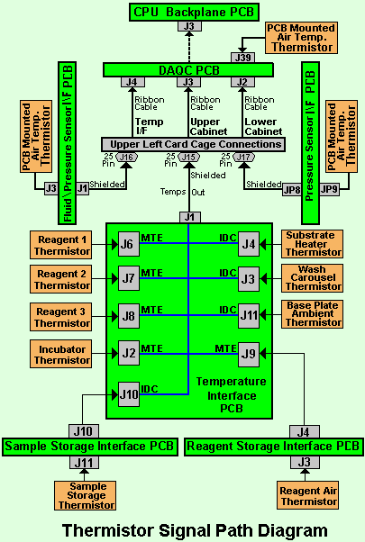

Troubleshooting - General Temperature
Purpose
This document provides information for troubleshooting temperature issues in the instrument.
Overview
This document contains these sections;
- Thermistor locations
- Case temperature
- Troubleshooting sections separated by type of temperature issue.
- Less than -20 °C or greater than 50 °C.
- Out-of-spec high.
- Out-of-spec low.
- Erratic.
- Temperature to resistance chart.
- Signal path diagram.
Thermistor Locations
| Temperature Sensor Name | Location | Used For Temperature Control |
|---|---|---|
| Substrate | Substrate Pump Heater, top | Yes |
| Wash Read Ring | Wash Carousel, side | Yes |
| Sample Wheel | Sample Storage Module, bottom left | Yes |
| Reagent Cooler 1 | Reagent Storage Module, behind | Yes |
| Reagent Cooler 2 | Reagent Storage Module, behind | Yes |
| Reagent Cooler 3 | Reagent Storage Module, behind | Yes |
| Reagent Storage (Air Temperature) | Reagent Storage Module, top left rear corner | Yes |
| Base Plate | Temperature Interface PCB, bottom right | No |
| Upper Cabinet | Fluid Pressure Sensor Interface PCB, top center | Yes, with software V4.5 and higher |
| Lower Cabinet | Vacuum Pressure Sensor Interface PCB, top rear corner | No |
| DAQC PCB - CPU Cabinet | DAQC PCB, bottom side, left end | No |
| Incubator (not displayed or used)
Note: The incubator heaters are driven at a quarter of the duty cycle that the wash read ring.
|
Analytical Module, bottom center | No |
Case Temperature Errors
Perform these steps to troubleshoot case temperature errors.
Note: DxI software V4.5 and higher has an upper cabinet temperature range of 18 to 36 °C.
- Confirm that ambient lab operating temperature is within specification. If the ambient lab operating temperature is outside the temperature range of 18 to 36 °C, then request that the lab adjust the lab environment to meet the requirements.
Note: A temperature monitoring device can be obtained through Systems Technical Support. Refer to Support Plan for PCA-16241 for further details.Note: For software V4.5 and higher, the ambient operating temperature range is 18 to 30 °C.
- Confirm that the air filter on the DxI main blower is not obstructed.
Note: Refer to the Peripherals: Cleaning Main Blower Air Filter procedure.
- Confirm that the upper cabinet thermistor and exhaust fans are functioning.
Less than -20 °C or Greater than 50 °C
Perform these steps to troubleshoot temperature errors caused by shorted or open temperature sensors.
Note:
- The thermistor used in the sample storage module is sealed, like the Access Instrument reagent storage thermistor, but using a newer process. For the best reliability, use only the part number listed in the DxI parts list to replace a failed DxI sample storage thermistor.
- The temperature control loop adjusts the duty cycle of the heater or cooler from the measured temperature. If the temperature is excessively out-of-range, software disables the heater or cooler.
- Observe the temperature indicated in the
Analog Devices window of the user interface. A temperature:
- Lower than -20 °C indicates an open circuit.
- Higher than 50 °C indicates a shorted thermistor.
- Ambient indicates a heater or cooler problem.
Note:- In some situations, it can help to measure a temperature with a temperature meter. For example, when it is suspected that the displayed temperature with a known reliable thermistor does not seem accurate.
- If the instrument is running and the Analog Devices >> Analog Data button is not accessible, the machine control program on the AU has a Temperature button that can be used as a source of temperature and duty cycle information.
- Disconnect the thermistor, and measure the resistance between pins 1 and 2 on the thermistor connector (black to red, or black to green wires).
Note:
- The resistance is approximately 10K Ohm at 25 °C.
- The resistance of a shorted thermistor is low, less than 1K Ohm.
- Temporarily substitute a replacement thermistor into the circuit, and view the displayed temperature.
Note: The thermistor attached to J9 on the pressure sensor interface PCB can be used for troubleshooting.
If Then The displayed temperature using the substitute thermistor agrees with the substitute thermistors physical state (that is, room temperature, 25 °C). The sensing circuitry is OK. Replace the original thermistor. The displayed temperature using the substitute thermistor does not agree with the substitute thermistors physical state (-20 °C +50 °C inaccurate temperature not approximately 25 °C). Check all connections and cables. Use the signal path diagram in this document for reference.
Temperature Out-of-Spec High
Temperatures that are out-of-specification high normally occur in cooling applications (reagent storage, sample storage).
If the cooler temperature is out-of-specification high with a duty cycle of about 1.00 (100%), then possible causes include:
- Inaccurate (partially shorted) thermistor — Check the temperature using a thermocouple.
- Dirty intake air filter— Clean the air filter under the instrument lower right corner.
- Weak peltier — Replace the peltier.
- Dirty heat sink — Clean the heat sink.
Temperature Out-of-Spec Low
Temperatures that are out-of-specification low normally occur in heating applications (Analytical Module, Substrate Pump).
If the heater temperature is out-of-specification low with a duty cycle of about 1.00 (100%), then possible causes include:
- Open heater element — Verify that there are no open heater elements by measuring resistance, and then replacing as required.
- Wash wheel thermistor connector is connected to the Incubator connector on the interface PCB (cross-connected thermistors).
- Faulty cabling, connections or circuitry — Inspect cables, reseat connectors and PCBs as shown in the signal path diagram.
- Faulty thermal cutout in the analytical module — Measure the resistance to verify that the thermal cutouts are not open.
Note: The analytical module has two thermal cutouts.
Temperature Erratic
Perform these steps to troubleshoot erratic temperatures.
Note:
- An erratic temperature can indicate an intermittent thermistor short to ground or to the chassis.
- The reference voltage (center pin on the thermistor connector) for all the thermistors comes from the DAQC PCB. It is possible for one bad or shorted thermistor to affect the reference voltage used by all the thermistors.
- Navigate to the AU using Desktop Sharing.
- Open the TestAnalog.exe application found in the AU folder, or select the shortcut (if available).
- Monitor the voltages displayed on channels 31 and 39 (under normal conditions these voltages display 6.25 ±0.5). Erratic output can indicate a defective thermistor.
Note: Also, you can monitor the reference voltage by connecting a voltmeter to TP9 (ground) and the center pin of the upper cabinet thermistor at JP9 on the pressure sensor interface PCB. The pressure sensor interface PCB is located at the front of the buffer reservoir. Under normal conditions, the voltage reads approximately 1.25 V DC.
- Start unplugging thermistors from the temperature interface PCB, one at a time, while monitoring the displayed voltages. If the voltage is still unstable, plug each thermistor back in.
- If none of the temperature interface PCB connectors affect the voltages, then remove the PCB-mounted ambient temperature thermistors from:
- Fluid pressure sensor interface PCB located at the front of the buffer reservoir.
- Vacuum pressure sensor interface PCB located in the fluidics drawer.
- DAQC PCB located in the upper left card cage.
If the voltage is still unstable, plug in each thermistor.
- If all thermistors are normal, then there might be an issue with the cabling, connections, or circuitry. Troubleshoot by inspecting the cables, and reseating the connectors and PCBs as shown in the signal path diagram.
Temperature to Resistance Chart
Note:
- If the temperature of the thermistor is known, then the measured resistance can be used to determine if the thermistor is functioning.
- A questionable thermistor can be placed into a container of water and ice (0.0 °C). If the measured resistance is 32.65 K Ohm, then the thermistor is OK.
| Temp (°C) | Resistance (K ohm) | Temp (°C) | Resistance (K ohm) | |
|---|---|---|---|---|
|
-22.0 |
108.9 |
25.0 |
10 |
|
|
0.0 |
32.65 |
30.0 |
8.05 |
|
|
4.0 |
26.68 |
36.0 |
6.26 |
|
|
10.0 |
19.90 |
37.0 |
6.01 |
Signal Path Diagram
